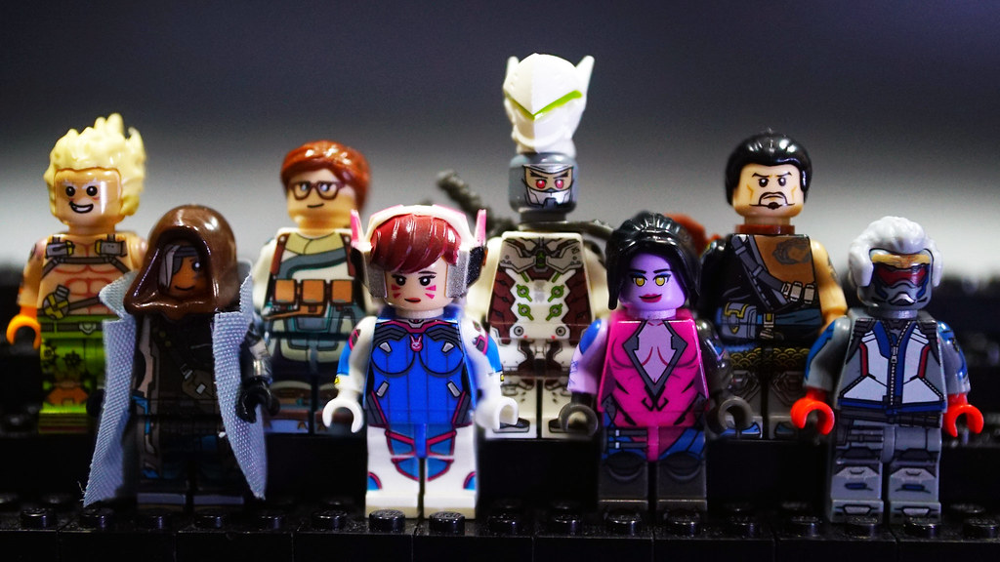

Overwatch
This is a college project, completed as part of an assignment. All sources of information are at the bottom of the page.
Click on the Overwatch 2 Logo above, to find out more about Overwatch 2...
Story of Overwatch 2
THE DAWN OF A NEW OVERWATCH! Reunite and stand together in a new age of heroes. Overwatch 2 builds on an award winning foundation of epic competitive play, and challenges the world’s heroes to team up, power up, and take on an overwhelming outbreak of threats around the globe. Play an active role in the next chapter of the Overwatch saga through a series of intense four-player story missions. Fight back against Null Sector, uncover the motives behind the omnic attacks, and confront a rising wave of new threats. It’s up to you and your friends to stop Null Sector, the elite forces of Talon, and other enemies of Overwatch from carrying out their plans. The Overwatch 2 Announcement Cinematic across, shows Winston, Tracer, and Mei confront overwhelming odds when Null Sector attacks Paris. This is the starting point of the story in Overwatch 2. Find out more about the full timeline of Overwatch, and all of the story up to Overwatch 2 here...
New Features & Content
The Overwatch 2 Gameplay Trailer across, shows the state of Overwatch 2 in November 2019. The trailer shows off some gameplay and introduces the audience to the planned new features and content for Overwatch 2. Find out more about the new features and content of Overwatch 2 here...
Ever-Evolving Multiplayer
New Map Type
PUSH: A new, symmetrical map type. Teams battle to take control of a robot that begins in a central location of the map, then push it toward the enemy base. Either team may take control of the robot at any time. The team that pushes the robot furthest onto the enemy side wins the game.
New Heroes
NEW FACES! Overwatch 2 will add various new heroes to the current roster of 32 heroes, shaking up competitive play and creating opportunities for bold new strategies. One of these new heroes is Sojourn, a key character in the mordern day story of Overwatch 2.
New Maps
A BIGGER WORLD! Overwatch 2 will add various new maps, taking battle to new, iconic international locations, from the colorful streets of Rio de Janeiro, Brazil, to the scenic splendor of Gothenburg, Sweeden.
Brand-New Story Content
Action-Packed Story Missions
Play an active role in the next chapter of the Overwatch saga through a series of intense four-player missions. Fight back against Null Sector, uncover the motives behind the omnic attacks, and confront a rising wave of new threats.
Replayable Hero Missions
The battle continues with Hero Missions. As escalating crises break out around the world, encounter an ever-changing array of scenarios with a range of diverse and dangerous enemies. Level up your favorite heroes and earn powerful customization options to help beat the odds.
New Factions Arise
It’s up to you and your friends to stop Null Sector, the elite forces of Talon, and other enemies of Overwatch from carrying out their plans. Each enemy faction features a unique mix of units with their own strategies and strengths, challenging you to adapt your approach every time you play.
A Visual Evolution
New Look
Overwatch 2 evolves the look and feel of the world, with more dynamic environments, larger scale battles, additional in-game storytelling events, and improved atmospheric effects and shadows. Heroes in Overwatch 2 will also have a brand-new look, with greater detail and higher fidelity. All heroes on the current hero roster will be getting an updated look. Current Overwatch players will be able to see and play along-side these updated visuals of Overwatch 2 without having to upgrade to Overwatch 2, but will not be able to have them themselves.
Redefining a Sequal
The developers of Overwatch and Overwatch 2, Blizzard Entertainment, have said that their aim is to Redefine a Sequal with Overwatch 2. They believe players should not be punished for developers wanting to evolve and produce new content. In many other game sequals, players start from scratch and they loose everything they accomplished in the original game. But now, Blizzard have made their own rules. Overwatch 2 builds on the award-winning foundation of Overwatch, becoming a hybrid of Overwatch. Overwatch 2 will include everything that Overwatch has, but also more. Overwatch 2 will include various new heroes and maps at launch, while adding new updated visuals to all current and future heroes of the game. Current Overwatch players will battle side-by-side with Overwatch 2 players in PvP multiplayer, along with being able to play Overwatch 2 heroes and maps. Accomplishments and loot collections of Overwatch players will be carried forward to Overwatch 2. That means Overwatch players will keep their skins, player icons, sprays, emotes, and more! Therefore, Overwatch 2 is a massive, free content update for all players of Overwatch. Not purchasing Overwatch 2 is completely an option, but, the most requested piece of content for Overwatch, is a story mode and Overwatch 2 will deliver on that. Blizzard have said that in order to incorporate a story mode, an update must be made to the game engine, therefore a new game is required. Find further information on Blizzard Entertainment's reasoning for redefining a sequal in the video across.